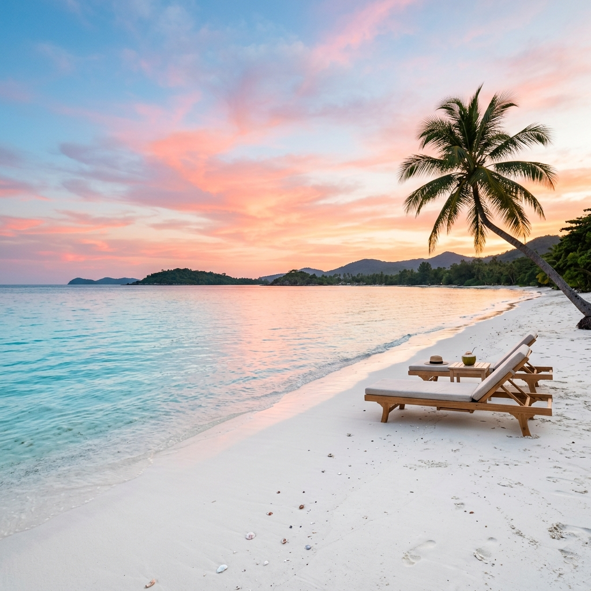
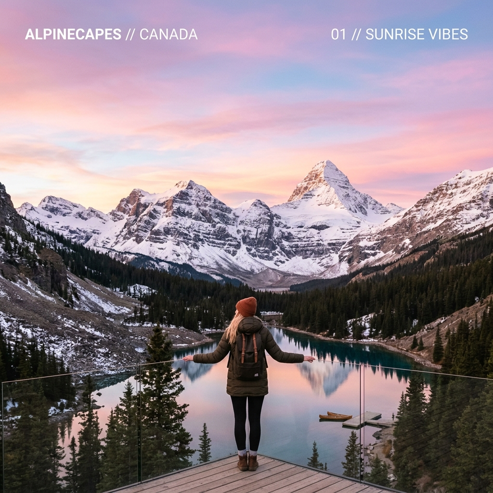

Las 10 Mejores Playas para Visitar este Verano

Descubre paraísos ocultos con aguas cristalinas y arena blanca. La guía definitiva para tus próximas vacaciones.
El verano está a la vuelta de la esquina y no hay nada como relajarse en una playa paradisíaca. Aquí te presentamos nuestro top 10 de las mejores playas del mundo y dónde están ubicadas:
1. Navagio Beach
Ubicación: Zakynthos, Grecia.
Famosa por su arena blanca y el pintoresco barco encallado en la orilla, rodeada de acantilados.
2. Playa Paraíso
Ubicación: Tulum, México.
Destaca por sus ruinas mayas asomándose frente al mar turquesa del Caribe.
3. Whitehaven Beach
Ubicación: Islas Whitsunday, Australia.
Ubicada en el corazón de la Gran Barrera de Coral, su arena de sílice es una de las más puras del planeta.
4. Anse Source d'Argent
Ubicación: La Digue, Seychelles.
Conocida mundialmente por sus gigantescas y caprichosas rocas de granito rosado.
5. Playa de Ses Illetes
Ubicación: Formentera, España.
Un paraíso mediterráneo de aguas transparentes y poco profundas, ideal para relajarse.
6. Baia do Sancho
Ubicación: Fernando de Noronha, Brasil.
En un archipiélago volcánico, accesible solo por escaleras estrechas en el acantilado o en bote.
7. Grace Bay
Ubicación: Providenciales, Islas Turcas y Caicos.
Famosa por su extenso arrecife de coral protector y oleaje tranquilo.

8. Playa Radhanagar
Ubicación: Islas Andamán y Nicobar, India.
Rodeada de frondosa selva tropical, ofreciendo atardeceres mágicos.
9. Pink Sands Beach
Ubicación: Isla Harbour, Bahamas.
Debe su increíble color a foraminíferos microscópicos de caparazón rosa.
10. El Nido
Ubicación: Palawan, Filipinas.
Famosa por sus lagunas secretas rodeadas de imponentes formaciones kársticas.
"Recuerda siempre viajar de manera responsable: lleva tu basura, usa protector solar biodegradable y respeta la fauna local."← Volver al inicio